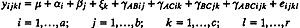
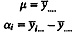

| Previous | Table of Contents | Next |
Work expands to fill the time available for its completion.
—C. Northcote Parkinson
The experimental designs analyzed so far are sufficient to solve problems encountered frequently. They can be easily extended to a larger number of factors. This chapter briefly describes the models used for such designs and illustrates it with a case study involving four factors. Three informal methods are then presented in Section 23.3 for analysis of experimental designs that can be used for larger number of factors as well as for designs discussed in earlier chapters.
The model for a k-factor full factorial design contains 2k - 1 effects. This includes k main effects, (k2) two-factor interactions, (k3) three-factor interactions, and so on. For example, with three factors A, B, and C at a, b, and c levels, respectively and r replications, the model is

where
and
and so on.
The analysis of full factorial designs with k factors is similar to that with two factors presented earlier in Chapters 21 and 22. For example, the parameters can be estimated from means taken along various dimensions:

The sums of squares, degrees of freedom, and F-test also extend as expected. The following case study illustrates the analysis of a general k-factor design.
α = y1... - y... = 2.74-2.90 = -0.16
| TABLE 23.1 Fhetors and Levels for Page Swap Study | ||||
|---|---|---|---|---|
| Symbol | Factor | Level 1 | Level 2 | Level 3 |
| A | Page replacement algorithm | LRUV | FIFO | RAND |
| D | Deck arrangement | GROUP | FREQY | ALPHA |
| P | Problem program | Small | Medium | Large |
| M | Memory pages | 24P | 20P | 16P |
| Previous | Table of Contents | Next |